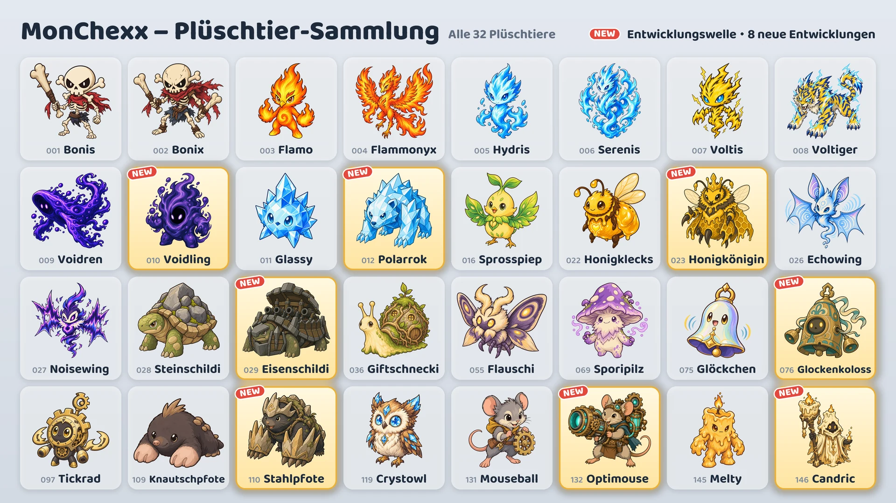

Saison 1 · Update 02: Entwicklungswelle
Am 16. Oktober kommen acht neue Entwicklungen ins Spiel.

Acht neue Entwicklungen
- Voidling: Entwicklung von Voidren · Tank
- Polarrok: Entwicklung von Glassy · Tank / Kämpfer
- Honigkönigin: Entwicklung von Honigklecks · Unterstützer / Fernkämpfer
- Eisenschildi: Entwicklung von Steinschildi · Tank
- Glockenkoloss: Entwicklung von Glöckchen · Tank / Unterstützer
- Stahlpfote: Entwicklung von Knautschpfote · Tank / Assassine
- Optimouse: Entwicklung von Mouseball · Fernkämpfer
- Candric: Entwicklung von Melty · Unterstützer / Fernkämpfer
So bekommst du sie
- Greifautomaten (Event): Während des Events (16.–24. Oktober) enthält jeder Greifautomat außer den beiden an den Enden der Reihe eine der neuen Entwicklungen neben zwei anderen Plüschtieren. Nach dem Event kommen die neuen Entwicklungen genauso oft in die Automaten wie alle anderen Plüschtiere.
- Plüschtier-Tausch: Tausche 10 Doppelte gegen ein Plüschtier deiner Wahl (Wunschtausch) oder 3 gegen ein zufälliges Plüschtier (Zufallstausch).
- Plüschtier-Packs: Auch die neuen Entwicklungen können darin enthalten sein.
Entwickelte Plüschtiere nutzen
- Ein entwickeltes Plüschtier wird eigenständig gesammelt, und du kannst es in dein Team aufnehmen, sobald du es hast.
- Wähle unter „Stell dein Team zusammen“ ein Plüschtier aus und tippe auf Grundform oder Entwicklung, um seine Form zu wechseln.
- Ein Team kann aus jeder Entwicklungslinie nur ein Plüschtier enthalten.
- Ein entwickeltes Plüschtier steigt unabhängig von seiner Grundform im Level auf.
Neue Plüschtiere
Werte „der Angriffskraft“, „der Magiekraft“ oder „der maximalen Lebenspunkte“ wachsen mit, wenn das Plüschtier im Level aufsteigt.
Voidling · Tank · Reichweite 1
- Sog der Leere: Die maximalen Lebenspunkte steigen um 560% der Magiekraft + 6% der maximalen Lebenspunkte zu Kampfbeginn, und Voidling heilt sich um denselben Betrag. Danach fügt es allen Gegnern im Umkreis von 1 Feld Magieschaden in Höhe von 10% seiner aktuellen Lebenspunkte zu. Die zusätzlichen maximalen Lebenspunkte bleiben bis zum Ende des Kampfes erhalten.
- Festmahl der Leere: Erhält jedes Mal 10 Mana, wenn ein Gegner im Umkreis von 4 Feldern seine aktive Fähigkeit einsetzt.
Polarrok · Tank/Kämpfer · Reichweite 1
- Frostschlag: Fügt dem aktuellen Ziel physischen Schaden in Höhe von 820% der Angriffskraft und Gegnern im Umkreis von 1 Feld um das Ziel in Höhe von 385% zu und belegt sie mit Frost (−15% Angriffstempo für 8 Sekunden). Hat sich Frost 3-mal auf dem aktuellen Ziel gestapelt, wird es 1,5 Sekunden lang eingefroren und kann weder handeln noch Mana erhalten.
- Kristallhaut: Erleidet 20% weniger Magieschaden, auch bei Dauerschaden.
Honigkönigin · Unterstützer/Fernkämpfer · Reichweite 3
- Gelée royale: Heilt alle eigenen Arbeitsbienen um 100% ihrer maximalen Lebenspunkte und erhöht 3 Sekunden lang ihr Angriffstempo um 200%. Hat sie weniger als 3 Bienen, beschwört sie 1 weitere.
- Bienenschwarm: Führt bis zu 3 Arbeitsbienen an. Ihre Werte richten sich nach dem Level von Honigkönigin, und jede Biene verliert jede Sekunde 4% ihrer maximalen Lebenspunkte. Wird Honigkönigin besiegt, geraten ihre Bienen in Raserei und verursachen und erleiden doppelten Schaden.
Eisenschildi · Tank · Reichweite 1
- Rundumfeuer: Dreht sich auf der Stelle gegen den Uhrzeigersinn und feuert seine Kanone 6-mal ab. Jedes Geschoss fügt dem ersten Gegner, der in dieser Richtung höchstens 2 Felder entfernt ist, physischen Schaden in Höhe von 1540% der Angriffskraft zu. Bewegt sich beim Feuern nicht und erhält kein Mana; wird es betäubt oder eingefroren, hört es auf.
- Festungspanzer: Erhält für jeden Gegner im Umkreis von 1 Feld 35 Rüstung und 35 Magieresistenz.
Glockenkoloss · Tank/Unterstützer · Reichweite 1
- Glockenschlag: Fügt allen Gegnern im Umkreis von 2 Feldern Magieschaden in Höhe von 555% der Magiekraft zu und provoziert sie 2 Sekunden lang. In dieser Zeit werden 35% jedes erlittenen gegnerischen Standardangriffs (vor Verringerungen) als Magieschaden an alle Gegner im Umkreis von 2 Feldern zurückgegeben.
- Resonanz: Heilt sich um 120% der Magiekraft, wenn ein anderer Verbündeter im Umkreis von 2 Feldern seine aktive Fähigkeit einsetzt.
Stahlpfote · Tank/Assassine · Reichweite 1
- Tunnel-Ansturm: Entfernt alle eigenen Schwächungen, gräbt sich ein und bewegt sich zu dem freien Feld, um das herum die meisten Gegner stehen. Fügt danach allen Gegnern im Umkreis von 1 Feld physischen Schaden in Höhe von 740% der Angriffskraft zu. Kann unter der Erde nicht getroffen werden.
- Felskrallen: Erhöht die eigene Rüstung um 50% der Angriffskraft.
- Beginnt den Kampf mit 0 Mana.
Optimouse · Fernkämpfer · Reichweite 4
- Laserkanone: Lädt 1,5 Sekunden lang auf und feuert dann einen 1 Feld breiten Laserstrahl in Richtung des aktuellen Ziels bis zum Rand der Arena ab, der allen getroffenen Gegnern Magieschaden in Höhe von 1210% der Angriffskraft zufügt. Wird es beim Aufladen betäubt oder eingefroren, wird der Schuss abgebrochen.
- Vorheiz-Schaltkreis: Jeder Standardangriff erhöht das Angriffstempo um 15%, bis zu 100%. Beim Einsatz der aktiven Fähigkeit wird dieser Bonus zurückgesetzt.
Candric · Unterstützer/Fernkämpfer · Reichweite 3
- Ewige Flamme: Markiert 5 Sekunden lang den Verbündeten (außer sich selbst) mit den wenigsten Lebenspunkten und gewährt ihm für dieselbe Dauer einen Schild in Höhe von 375% der Magiekraft. Würde Direktschaden den markierten Verbündeten besiegen, erleidet Candric stattdessen 200% dieses Schadens.
- Schmelzendes Wachs: Erlittener Direktschaden wird über 4 Sekunden verteilt von den Lebenspunkten von Candric abgezogen.
Ranglistenmatches und Abzeichen
- Gegner in Ranglistenmatches setzen ebenfalls die neuen Entwicklungen ein.
- Die acht neuen Entwicklungen zählen nicht für das Abzeichen „Sammlung Saison 1“.
- Das Abzeichen „Entwicklungsprofi“ erhältst du, wenn du 5 verschiedene entwickelte Plüschtiere besitzt. Es gibt jetzt 13 entwickelte Plüschtiere.
Die Balance-Änderungen aller Plüschtiere findest du in den Patchnotes „Balance und Kampfsystem“.